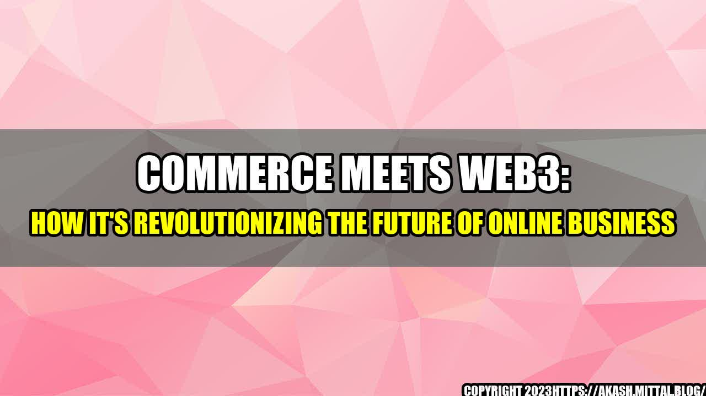

 Picture this: it's the year 2025, and the world of commerce has been completely transformed. Xander, a small business owner, is selling her products online through a decentralized e-commerce platform built on the blockchain. With this platform, she's able to engage directly with her customers without the need for middlemen or platform fees. This means more profits for her and a more personalized experience for her customers. Xander isn't alone in this revolution. As commerce meets Web3, we're seeing a paradigm shift in the way business is done online. In this article, we'll explore the impact of Web3 on commerce, highlighting some quantifiable examples and providing practical tips for businesses looking to stay ahead of the curve.
Web3: What is it and Why it Matters
Web3 refers to the decentralized web, where information and transactions are verified and stored on a distributed network of computers rather than a centralized server. This decentralized approach offers a more secure and transparent way of doing business. For commerce, this Web3 revolution translates to a shift towards peer-to-peer marketplaces and the elimination of intermediaries. As a result, businesses can now engage directly with their customers and cut out the middlemen who traditionally took a cut of profits.
The success of Web3 in commerce is evident through a number of quantifiable examples, including: 1. Lower transaction fees: With the elimination of intermediaries, transaction fees are drastically reduced. For example, OpenBazaar, a decentralized marketplace built on blockchain, charges no fees for transactions. 2. Faster payment processing: With traditional payment processing being routed through multiple intermediaries, transactions can take days to process. With Web3, transactions are instantaneous, thanks to the use of smart contracts. 3. Increased transparency: Web3's decentralized approach to commerce means that all transactions, from purchase to delivery, are visible and recorded on the blockchain. This transparency can help alleviate concerns about fraud and ensure fair transactions.
and Case Studies
In order to illustrate the impact of Web3 on commerce, let's look at a few personal anecdotes and case studies. One such case study is that of Ujo Music, a blockchain-based music platform that connects artists directly with their fans. By eliminating the need for record labels and other intermediaries, Ujo Music is able to offer artists a greater share of the profits while also giving fans a more personalized, direct connection to their favorite artists. Another example is that of Origin Protocol, a decentralized marketplace for peer-to-peer commerce. One of its users, a jewelry designer, was able to increase her profits by 60% thanks to the elimination of platform fees and the ability to engage directly with customers.
Practical Tips for Businesses
If you're looking to stay ahead of the curve and take advantage of the Web3 revolution in commerce, here are a few practical tips: 1. Explore decentralized marketplaces and platforms: Look for platforms and marketplaces built on blockchain that eliminate intermediaries and offer lower transaction fees. 2. Embrace cryptocurrency: As Web3 continues to gain momentum, cryptocurrency is becoming an increasingly popular form of payment. By accepting cryptocurrency, you can expand your customer base and stay ahead of the curve. 3. Focus on transparency: With Web3's emphasis on transparency, it's important to make sure your business is operating in an open and honest way. Consider how you can leverage blockchain technology to increase transparency in your operations and build trust with your customers.
Conclusion
As we've seen, the Web3 revolution is having a transformative impact on commerce, with lower transaction fees, faster payment processing, and increased transparency. By embracing decentralized platforms and cryptocurrency and focusing on transparency, businesses can stay ahead of the curve and thrive in this new era of commerce. Reference urls: 1. https://www.forbes.com/sites/andrewrossow/2019/04/11/how-blockchain-is-transforming-e-commerce-and-online-retail/?sh=5b62d8226df0 2. https://www.inc.com/james-paine/the-future-of-e-commerce-how-web-3-will-revolutionize-the-industry.html 3. https://www.nasdaq.com/articles/what-is-web-3.0-how-is-it-changing-business-2021-03-29 Hashtags: 1. #Web3 2. #DecentralizedWeb 3. #Web3Commerce 4. #Blockchain 5. #CryptoCommerce Article Category: 1. Blockchain 2. E-commerce 3. Web3.0
Curated by Team Akash.Mittal.Blog
Share on Twitter Share on LinkedIn